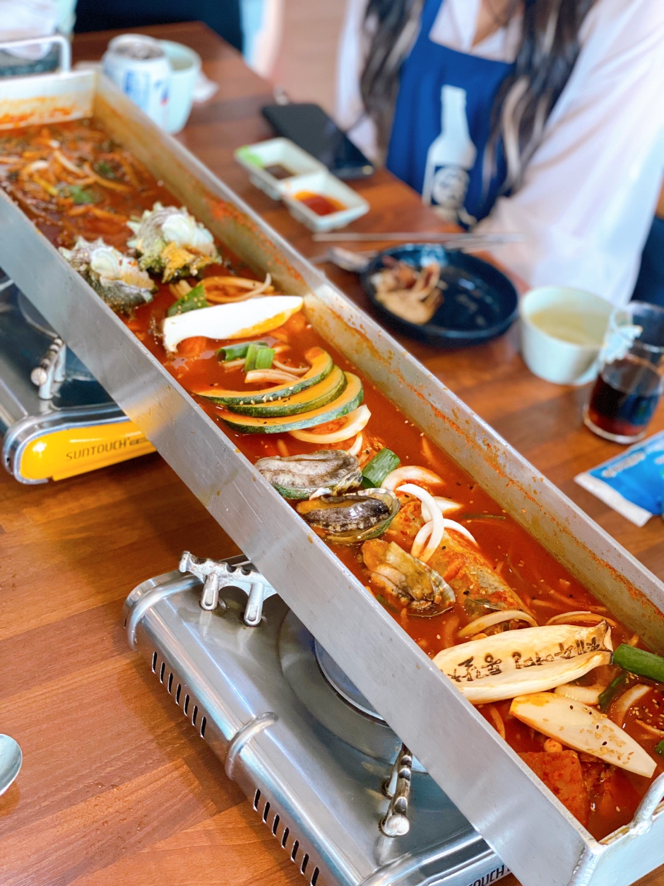

제주

2021.08.17 ~ 20
가족여행으로 간 제주도는 제가 처음으로 비행기를 타고 향한 목적지여서 기억에 많이 남습니다.
깨끗한 바닷물과 시원한 공기가 너무나도 꿈같던 여행이였습니다.
교통
<비행기>
천안아산역 -> 동대구역 -> 대구국제공항 -> 제주국제공항
ktx를 이용하여 천안아산역에서 동대구역으로 이동합니다.
동대구역에서 버스를 타고 대구국제공항으로 이동한 뒤, 제주국제공항까지 비행기로 이동합니다.
이동가격은 ktx 29,300원, 버스 1,650원, 비행기 주말 평균가 100,719원이므로 총 131,669원이 소요됩니다.
<자동차 + 배>
천안아산역 -> 목포국제항국제여객터미널 -> 제주항국제여객터미널
서해안 고속도로를 탄다는 전재로 목포항국제여객터미널까지 총 270km이고, 3시간 8분이 소요됩니다.
목포항국제여객터미널에 도착하면 대표적으로 퀸제누비아, 퀸메리2 중 하나의 배를 탑승할 수 있습니다.
여객선에선 총 180km 거리를 4시간 30분 정도 소요하여 제주항국제여객터미널에 도착할 수 있습니다.
차량 통행료 12,500원, 여객선 객실에 따라 35,000 ~ 549,000, 차량 선착비용은 경차 기준 10만원 부터로 다양한 가격대로 탑승 가능합니다.
여객선의 가격 정보는 홈페이지를 참고해주세요 제주항여객터미널
숙소
디오션힐 펜션
제주 서귀포시 안덕명 사계북로 208에 위치한 디오션힐 펜션은 모든 방에 테라스가 준비되어 있으며 오션뷰를 즐길 수 있는 펜션입니다. 총 7개의 객실이 준비되어있으며, 황우치 해변과 용머리해안이 차량 2분 거리에 있어 바다를 보기 좋은 위치에 있습니다.
가격정보
| 객실명 | 인원(기준/최대) | 객실가격 |
|---|---|---|
| 오션 1~4 | 2/3명 | 65,000 |
| 스파뷰 1~2 | 2/4명 | 90,000 |
| 파노라마 1 | 2/5명 | 120,000 |
바베큐정보
야외 공용 바베큐장
이용시간 : ~ 22시
이용요금 : 4인기준 20,000원
부가정보
3,000원을 지불하면 한식으로 나오는 아침 조식을 먹을 수 있습니다.
펜션 고객들만 이용 가능한 실내 공용공간이 마련되어 있습니다.
먹거리
제주어멍
제주 제주시 서해안로 372에 위치한 통갈치조림집입니다. 갈치조림은 살아있는 재료를 넣어주셔서 신선함을 눈으로 볼 수 있었습니다. 매장이 넓고 사장님이 친절하여 즐겁게 식사한 식당이였습니다.
가격정보
갈치조림 + 돔베고기, 고등어구이 2인 : 50,000
문어전복통갈치조림 : 108,000
활어회+통갈치조림 2인 : 150,000
통갈치구이 : 78,000
*네이버 예약 시 5%할인
영업정보
연중무휴
매일 09:00 ~ 21:00
라스트오더 : 20:00
하갈비

제주 제주시 애월읍 애월북서길 54에 위치한 오션뷰 정육식당입니다. 돼지는 제주 흑돼지만 판매하며, 한우는 1++한우만 취급합니다. 식당은 통창으로 되어있어 바다를 보며 식사가 가능했고, 고기집인데도 냄새나 연기가 없어 쾌적하다고 느껴지는 식당이였습니다.
가격정보
흑돼지 오겹살/목살(100g) : 7,500
투쁠 등심(100g) : 16,500
투쁠 갈비살(100g) : 17,800
흑돈 오마카세(100g) : 8,200
마약왕꽃갈비(250g) : 24,000
흑돼지 생갈비(100g) 8,000
영업정보
연중무휴
매일 11:00 ~ 22:00
라스트오더 : 20:40
관광지
마라도
마라도는 제주 서귀포시 대정읍 가파리600에 위치한 대한민국 최남단에 위치한 섬입니다.
섬 내부에는 마라도 등대와 초콜릿 박물관이 마라도에서 유명한 관광명소이며 주로 짜장면과 짬뽕을 판매하는 식당이 많습니다.
여객선 정보
마라도 가는 여객선에서 여객선을 예약하고 탑승할 수 있습니다. 운항시간은 30분이며, 하루에 7대의 배가 운행합니다.
첫 배는 09:20에 탑승 가능하며, 마지막으로 승선 가능한 배는 14:10분에 있습니다.
마라도에서의 체류시간은 1시간 30분부터 최대 2시간입니다.
여객선 가격 정보
왕복기준
성인/청소년 : 18,000
소인 : 9,000
정방폭포
제주 서귀포시 칠십리로 214번길 37에 위치한 정방폭포는 동쪽 바닷가에 있는 명승지로 제주 3대 폭포 중 한 곳이며 바다로 떨어지는 동양 유일의 해안폭포입니다.
입장료 정보
어른 : 2,000
어린이 : 1,000
청소년 : 1,000
군인 : 1,000
* 주차장 무료
입장 정보
연중무휴
09:00 ~ 17:20